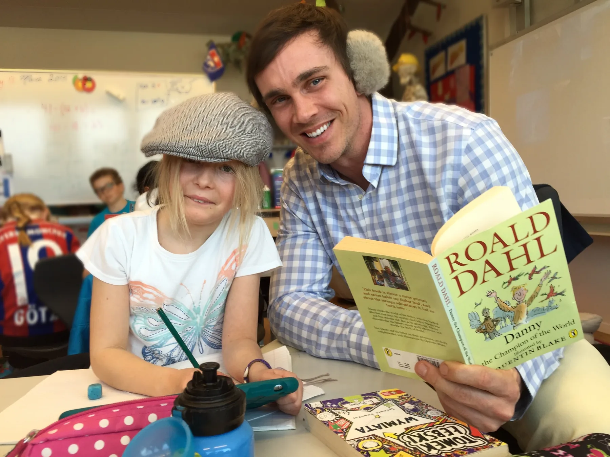
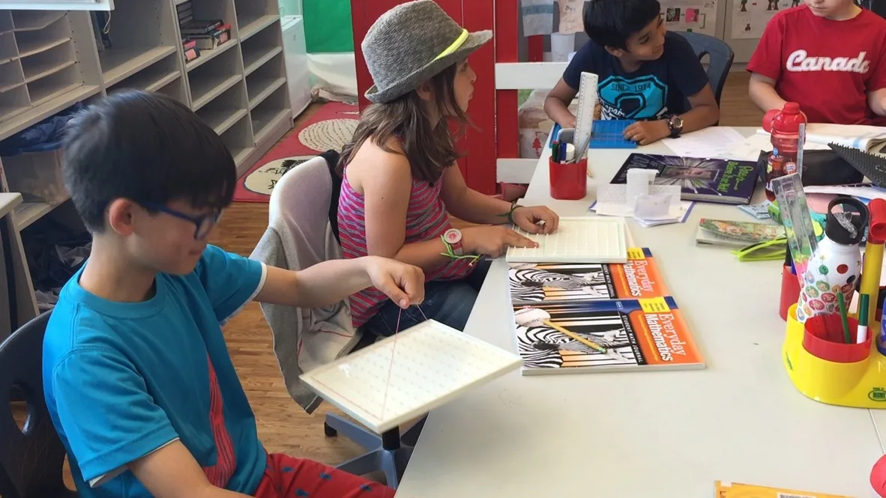

Leadership & educational philosophy
Lead with care.
Build with purpose.
The most meaningful leadership begins with relationships — and becomes lasting through the learning, support and opportunities we build around young people.
My experience spans formal curriculum leadership, pastoral advocacy, staff development and collaborative work across academic and co-curricular life.
Explore my approach
What matters most
Every child needs
someone in their corner.
I believe children recognise authenticity. They know when an adult is listening, paying attention and genuinely interested in who they are becoming.
Some of the teachers who influenced me most were the ones who noticed when something was wrong — sometimes before I knew how to ask for help. I have tried to bring that same care and attentiveness to my own classrooms.
My approach to leadership grows from that foundation. It means setting high expectations without losing empathy; supporting colleagues rather than directing from a distance; and being willing to challenge an established approach when it is not meeting a pupil's needs.
I have led through a formal appointment and through expertise, collaboration and stepping forward when a school needed support. In both settings, I see leadership as a shared responsibility to do right by children.
See the child, not only the work or behaviour.
Create trust through honest, consistent conversations.
Keep families and colleagues working towards a shared purpose.
Choose understanding and wellbeing over short-term appearances.
Leadership in practice / Pastoral
Being the adult
they can turn to.
An effective classroom is somewhere pupils feel safe enough to be themselves, try something difficult and ask for help.
One Grade 5 class stays with me for the sense of community we developed together. There were differences, disagreements, adventures and plenty of laughter, but the pupils also learned how to look after one another. At the end of the year, they surprised me with a film of our shared experiences, closing with a line I often used in class: “Don't be sad that it's over. Be happy that it happened.”
Years later, a former pupil returned to the classroom, sat in his old desk and began talking. He was now navigating a different stage of adolescence, but he still knew this was a place where someone would listen.
That moment says more about the work I value than any job title. The relationships we build can provide confidence, stability and a sense of belonging well beyond a single school year.
Leadership in practice / UK boarding school
Put the child
before the problem.
Sometimes the most important leadership decision is to move the conversation away from the past and towards what a pupil needs next.
During a Year 5 teaching appointment at a UK boarding school, I worked with a warm, engaging pupil who faced significant literacy difficulties. There were longstanding concerns, but a sufficiently coordinated plan for supporting his learning had not yet been established.
I came into the situation as a new teacher, listened carefully to the perspectives around me and made a point of forming my own relationship with the pupil and his family. Rather than allowing earlier tensions between adults to shape our next steps, I helped bring the family, learning support and school staff into a more constructive conversation.
With a shared understanding of his needs, clearer communication and consistent support, the pupil made meaningful progress over the year. What mattered was not identifying who had been right in the past, but ensuring that everyone could work together in his interests.
It taught me that pastoral leadership calls for diplomacy, honesty, patience and the professional courage to keep a child's needs at the centre of difficult conversations.
Formal leadership / Two-year appointment
Building foundations
for future learning.
As Head of Junior School Mathematics for two years, I helped shape the Mathematics curriculum at a time when Rosenberg's Primary School was developing its educational identity.
The school wanted to build beyond its existing English National Curriculum foundations, drawing on Singapore Mathematics approaches and inquiry-based learning while maintaining coherent progression through Junior School towards the different pathways pupils might later follow, including GCSE, IB and AP.
Drawing on my experience across those approaches, I developed curriculum progression, worked to align expectations across phases and supported colleagues as they adopted unfamiliar methods. I delivered professional development for our small Primary team, particularly around conceptual understanding, problem-solving and inquiry.
I also coordinated Mathematics assessment across Primary and Junior School and helped develop targeted interventions for pupils whose foundational understanding needed strengthening. My continued teaching of lower-attaining Middle School sets has reinforced that perspective.

Coherent progression
Bringing different educational approaches together and strengthening continuity between school phases.
Professional learning
Supporting teachers through changes to pedagogy, assessment and inquiry-based Mathematics.
Assessment & intervention
Identifying gaps early and adapting instruction so pupils can move forward with secure understanding.
Leadership through expertise, not a management title
A community
built around wellbeing.
I stepped into athletics when staffing changes threatened opportunities pupils valued. What began as helping keep lessons running became an enduring commitment to the wider life of the school.
When Rosenberg needed an ice-skating teacher, I drew on my experience as both an educator and a skater to teach pupils from Primary School through to the oldest students. The programme continued successfully for two seasons and helped lead to Primary co-curricular opportunities in roller skating, rollerblading and roller disco.
A later staffing change brought me into the fitness centre. Here I worked alongside highly experienced sport and fitness professionals, contributing a different kind of expertise: teaching young people, age-appropriate physical development, behaviour management and the pastoral side of school life.
My contribution was largely through mentoring, shared practice and collaboration, rather than formal staff-management responsibility. I also led an INSET professional development session on making better educational use of the school's outdoor fitness facilities.
Over time, the team helped grow a stronger culture of participation and support. For many students, the fitness centre became a valuable third place in boarding-school life: somewhere to find structure, confidence, friendship and a sense of belonging. Being part of that change has been one of the most rewarding aspects of my work at Rosenberg.
At the end of one school year, a group of graduating students came to find me in the Primary School to say goodbye. Several spoke about moments when the fitness centre — and the people in it — had helped them through difficult times. Experiences like that remind me why creating a positive school culture matters.
The kind of leader
I strive to be.
Present in the everyday life of a school. Clear about expectations. Willing to listen, learn and change course. And always mindful that behind every decision is a young person who needs us to get it right.
My experience has taught me to value both the systems that make a school work and the relationships that make it a place where children thrive. I want to bring those strengths to a wider pastoral and educational leadership role.